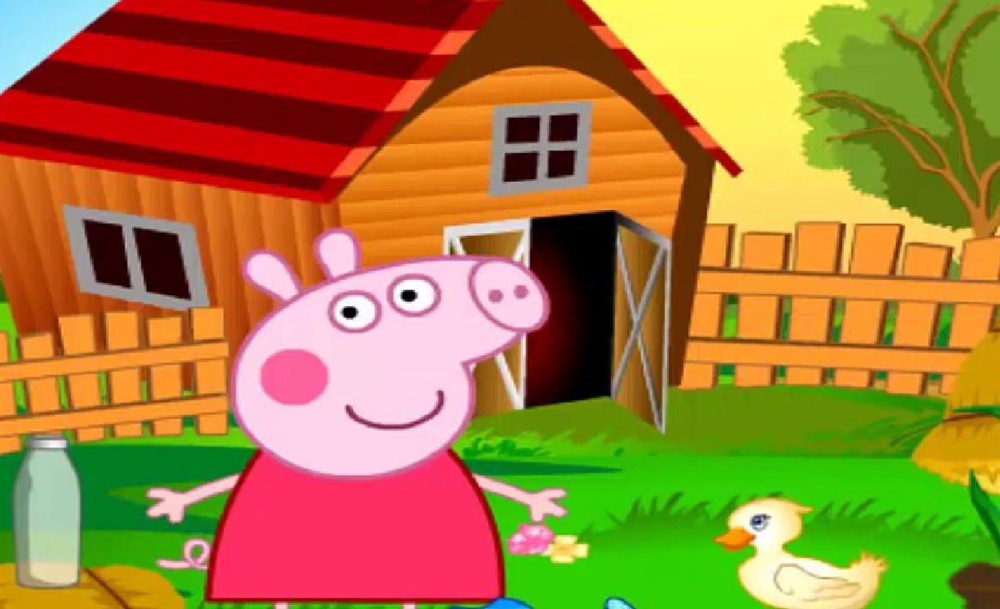

La historia del chanchito feliz
Cap 1

En una pequeña granja en el corazón del campo, nació un adorable cerdito llamado Pancito. Era de color
rosado, con ojos chispeantes y un hocico curioso que siempre estaba husmeando todo a su alrededor.
Pancito vivía con su madre, la señora Tocinita, y sus tres hermanos en un cobertizo acogedor junto a un
prado lleno de flores y un arroyo burbujeante.
Desde temprana edad, Pancito demostró ser un cerdito muy curioso y aventurero. Mientras sus hermanos
preferían quedarse cerca del cobertizo, él siempre estaba ansioso por explorar más allá de los límites
de la granja. Un día, mientras jugaba cerca del arroyo, Pancito escuchó un misterioso murmullo que venía
del otro lado del bosque que rodeaba la granja. Intrigado, decidió aventurarse más allá de los árboles
para descubrir qué era.
El Viaje de Pancito
Cap 2
Con su pequeño hocico temblando de emoción, Pancito se aventuró en el espeso bosque. Ramitas crujían bajo
sus patitas mientras avanzaba con valentía, siguiendo el misterioso murmullo. Pronto, se encontró con
una clara del bosque donde un grupo de animales estaba reunido alrededor de una fogata.
Eran animales de todas las formas y tamaños: conejos, zorros, mapaches y hasta un imponente oso. Pancito
se sintió un poco nervioso al principio, pero pronto se dio cuenta de que eran amigables. Le contaron
historias emocionantes sobre tierras lejanas y aventuras audaces. Fascinado por todo lo que escuchaba,
Pancito decidió unirse a ellos en su viaje.
En Busca del Tesoro Perdido
Cap 3
Guiado por un antiguo mapa que habían encontrado, Pancito y sus nuevos amigos se embarcaron en una
emocionante búsqueda del tesoro perdido del legendario pirata Baconbeard. Atravesaron campos y montañas,
enfrentando desafíos y resolviendo acertijos a lo largo del camino. Pancito demostró ser un miembro
valioso del equipo, usando su inteligencia y astucia para superar obstáculos.
Finalmente, después de muchas aventuras, llegaron a una isla misteriosa en medio del océano. Allí, en
una cueva escondida, encontraron el tesoro brillante de Baconbeard. Pero su alegría fue efímera cuando
se dieron cuenta de que la isla estaba habitada por una tribu de jabalíes salvajes que protegían
ferozmente el tesoro.
El Valor de la Amistad
Cap 4
Enfrentados a una situación peligrosa, Pancito y sus amigos tuvieron que usar toda su astucia y trabajar
juntos para encontrar una solución pacífica. A través del diálogo y la negociación, lograron llegar a un
acuerdo con los jabalíes, compartiendo el tesoro y ganando su amistad en el proceso.
Con el tesoro dividido equitativamente, Pancito y sus amigos regresaron a la granja con historias
emocionantes y recuerdos inolvidables. Aunque había disfrutado de su emocionante aventura, Pancito se
dio cuenta de que no había lugar como el hogar, donde lo esperaban su madre y sus hermanos.
Y así, Pancito aprendió que el verdadero tesoro no reside en riquezas materiales, sino en la amistad, la
valentía y el amor por los seres queridos. Y aunque su espíritu aventurero nunca desaparecería, sabía
que siempre había un lugar para él en la cálida y acogedora granja que llamaba hogar.